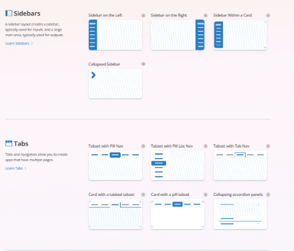
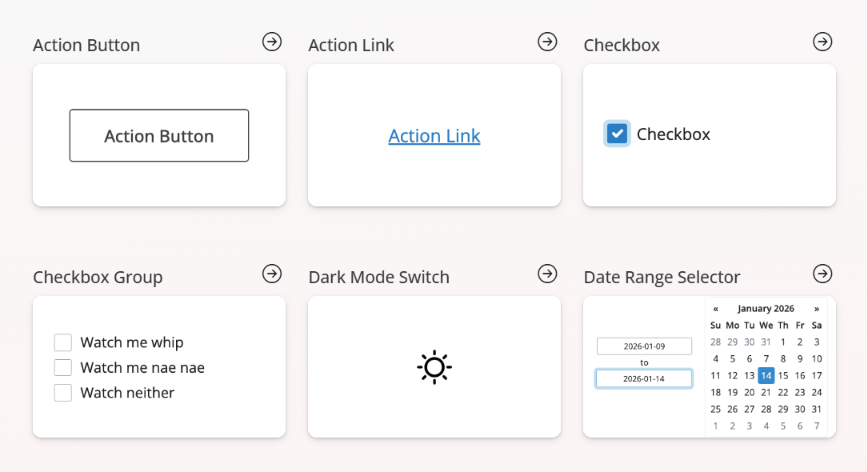

Shiny Applications
Creating interactive Web applications with R
Welcome back! Today we will have a look at:
- How to build Shiny apps in R
- A short introduction to flexdashboards
Shiny Applications in R 💎
What is Shiny?
Shiny is an R package that makes it easy to build interactive web
applications (apps) straight from R. You need to install the package
shiny:
For a quick illustration of what you can do with Shiny head over to the interactive visualization tool for the Freedom of Press Index
Throughout the lab we will use a running example to illustrate the
different aspects of creating a shiny app. You can find it in
shiny_app.R. It uses the penguins data from
the palmerpenguins package and shows the distribution of a
penguin measurement by species, together with a table of the data.
The app also uses the package DT, which makes
interactive tables:
Structure of a Shiny App
A Shiny app can be contained in a single R script. By convention the
script is called app.R and lives in its own directory (for
example, newdir/), so the app can be run with
shiny::runApp("newdir").
The file must have three core components:
A user interface object: The (UI) object controls the layout and appearance of your app.
A server function: The
serverfunction contains the instructions that your computer needs to build your app.A call to the
shiny::shinyApp()function: Theshiny::shinyApp()function creates Shiny app objects from an explicit UI/server pair.
Running a Shiny App
To create a Shiny app, save a script that contains the three
components outlined above. It is recommended to save each app as
app.R in its own directory.
You can run a Shiny app by giving the name of this directory to the
function shiny::runApp(). For example, if your Shiny app is
in a directory called my_shiny_app, run it with the
following code:
Our example is a single file called shiny_app.R. To run
it, open the file in RStudio and click Run App, or run
shiny::runApp("shiny_app.R").
Layout functions / UI 🗺️
Shiny uses layout functions to provide the
high-level visual structure of an app. In this lab we use the layout
functions from the bslib package, which is installed with
shiny. For example, page_sidebar() creates a
page with a title, a sidebar and a main area, and automatically adjusts
to the dimensions of the user’s browser window. You can lay out the user
interface of your app by placing elements in the
page_sidebar() function.
Older Shiny code often uses fluidPage() with
sidebarLayout() for the same kind of layout, so you will
still see it in many examples online. It works the same way.
Layouts are created by a hierarchy of function calls, where the
hierarchy in R matches the generated HTML. This means that you can get
an intuitive idea of the app structure by assessing the layout. This is
the ui of our running example:
page_sidebar(
title = "Palmer penguins",
fillable = FALSE, # let the page scroll so the table fits below the plot
sidebar = sidebar(
selectInput("measurement", "Measurement", choices = measurements)
),
card(card_header("Distribution"), plotOutput("distribution")),
card(card_header("Data"), DTOutput("penguin_table"))
)We can guess what is going on by reading the function names. This
code will generate a classic app design: a title bar at top, a sidebar
(containing a selectInput(), which creates a dropdown menu)
and a main area with two cards (containing the plot and the table).
📝 Note
The ability to easily see hierarchy through indentation is one of the reasons it is a good idea to use a consistent style when building these apps.
While page_sidebar() creates a basic layout for your
Shiny app, you can also choose from many different layouts. For example
you can use page_navbar() to give your app a multi-page
user interface that includes a navigation bar. Or you can use
layout_columns() to place cards next to each other in a
grid. If you’d like to learn more about these advanced options, have a
look at the Shiny layouts
guide.

Within the different layout functions you can also customize your app further by italicizing or making your font bold and even including html elements.
To learn more about how you can customize your UI see here and here.
Widgets 🖱️
A widget is a web element that the users can interact with. In other words to make your app interactive, you need widgets. These provide a way for your users to send messages to the Shiny app, meaning that when a user changes the input in a widget, the value that is shown will change as well.
Shiny comes with a family of pre-built widgets, each created with a
clearly named R function. For example, Shiny provides a function named
actionButton() that creates an Action Button and a function
named sliderInput() that creates a slider bar.
Check out the Shiny components page for an overview of standard widgets:

To add a widget to your app, you need to include a widget function in
your ui object, usually inside sidebar().
Each widget function requires several arguments. The first two arguments for each widget are:
A name for the widget: The user will not see this name, but you can use it to access the widget’s value. The name should be a character string.
A label: This label will appear with the widget in your app. It should be a character string, but it can be an empty string
"".
The remaining arguments vary from widget to widget, depending on what
the widget needs to do its job. They include things like initial values,
ranges, and increments. You can find the exact arguments needed by a
widget on the widget function’s help page, (e.g.,
?selectInput).
In our example app we have one widget, a selectInput()
that lets the user choose which penguin measurement to plot:
measurements <- c(
"Bill length (mm)" = "bill_length_mm",
"Bill depth (mm)" = "bill_depth_mm",
"Flipper length (mm)" = "flipper_length_mm",
"Body mass (g)" = "body_mass_g"
)
page_sidebar(
title = "Palmer penguins",
sidebar = sidebar(
selectInput("measurement", "Measurement", choices = measurements)
),
...
)The names of measurements are shown in the dropdown, and
the values are the column names. In the server,
input$measurement holds the column name of the chosen
measurement, for example "body_mass_g".
Display Reactive Output
To give your Shiny App a feeling of live interactiveness you need to include a way to display reactive output. Reactive output automatically responds when your user selects an option in a widget.
There are two steps involved in making your widgets reactive:
- Add the relevant output function to your
uifunction. - Provide R code to build the object in your
serverfunction.
Step 1
Shiny provides a family of functions that turn R objects into output for your user interface. Each function creates a specific type of output.
In our running example we used plotOutput() for the plot
and DTOutput() from the DT package for an
interactive table:
Step 2
Placing a function in ui tells Shiny where to display
your object. Next, you need to tell Shiny how to build the object.
We do this by providing the R code that builds the object in the
server function. You do this by defining a new element for
output within the server function. The element name should
match the name of the reactive element that you created in the
ui.
If you created a textOutput("selected_var") in your
ui, output$selected_var in the
server function matches this.
To illustrate this, let’s look at our example, where we used
plotOutput("distribution") and
DTOutput("penguin_table"). In the server
function we state:
server <- function(input, output) {
output$distribution <- renderPlot({
# .data[[ ]] picks the column whose name is stored in input$measurement
ggplot(penguins_clean, aes(x = .data[[input$measurement]], fill = species)) +
geom_density(alpha = 0.5, linewidth = 0.3)
})
output$penguin_table <- renderDT({
datatable(penguins_clean, rownames = FALSE)
})
}📝 Note
reactive() creates data that updates when an input
changes. For example, this holds the penguins from the chosen
islands:
selected <- reactive({
penguins_clean |>
filter(island %in% input$island)
})When several outputs use selected(), the filter runs
once for all of them. You call a reactive like a function, with
brackets: selected(). You will need it in exercise 3.
Every *Output() function in ui has a
corresponding render*() function in server for building
reactive widgets.
Each render* function takes a single argument: an R
expression surrounded by braces, {}. The expression can be
one simple line of code, or it can involve many lines of code.
Exercises
Now it is your turn, adapt the Shiny app by:
- Putting the plot and the table in separate tabs.
- Hint: replace the two
card()s withnavset_card_underline()and onenav_panel()per output. Only theuichanges. - Resources: Shiny tabs, bslib navsets
- Hint: replace the two
- Adding a choice between a density plot and a histogram.
- Hint: add
radioButtons()to the sidebar. InrenderPlot(), useif/elseto addgeom_density()orgeom_histogram(), and change the y-axis label too. - Resources: radioButtons(), geom_density(), geom_histogram()
- Hint: add
- Adding a filter for the island.
- Hint: add a
checkboxGroupInput()with the islands to the sidebar. Filter the data once in areactive()and use it in both outputs. - Resources: checkboxGroupInput(), reactive(), Mastering Shiny: basic reactivity
- Hint: add a
More complex apps ⚙️
You can create more complex Shiny apps by loading R Scripts, packages, and data sets.
What you need to know is that:
- The directory that
app.Rappears in will become the working directory of the Shiny app - Shiny will run code placed at the start of
app.R, before theserverfunction, only once during the life of the app. - Shiny will run code placed inside
serverfunction multiple times, which can slow down the app.
In our example, this is used to load the data, drop rows with missing
values and define the list of measurements. This only needs to be done
once. Within the server function we then build the plot for
the selected measurement; obviously this needs to be repeated every time
the input changes. This is why we placed that code within the
server function.
Dashboards with flexdashboard
The goal of flexdashboard is to make it easy to create interactive dashboards for R, using R Markdown. A flexdashboard can either be static (a standard web page) or dynamic (a Shiny interactive document). A wide variety of components can be included in flexdashboard layouts, for a full list see the documentation.
As with Shiny apps, we are going to be working with an example:
flexdashboard.Rmd. It is the same app as
shiny_app.R, built as a flexdashboard, so you can compare
the two. You need to install the package flexdashboard to
run it.
Flexdashboard in practice
The big difference to Shiny apps is that the flexdashboard Rmd file
will take over the function used to define the layout of the
dashboard/app. In other words, the entire Rmd, now plays the role of
page_sidebar().
So let’s have a closer look at how you can structure a flexdashboard.
Columns and rows
Dashboards are divided into columns and rows, with output components
delineated using level 3 markdown headers (###). By
default, dashboards are laid out within a single column, with charts
stacked vertically within a column and sized to fill available browser
height.
If you want to change the dashboard to include multiple columns you
can introduce the following (--------------).
If you want to change the dashboard to include multiple pages you can
introduce the following (=============).
In the YAML header of the Rmd you can specify a number of additional properties:
vertical_layout: scrollorientation: rows
Feeling overwhelmed? No need to come up with a fancy design all on your own. You can find a long list of templates here.
A note on shiny dashboards
To add Shiny components to a flexdashboard there are a few things that you need to remember.
you need to add
runtime: shinyto the options declared at the top of the document (YAML front matter).Add the
{.sidebar}attribute to the first column of the dashboard to make it a host for Shiny input controls (note this step isn’t strictly required, but many Shiny based dashboards will want to do this).
Overall, however, the same rules apply:
- You should perform any expensive loading of data within the global chunk.
- Input elements will go into the
{.sidebar}column. - Outputs are represented within flexdashboard content panes
This is how these pieces look in our example,
flexdashboard.Rmd.
The YAML header sets runtime: shiny,
vertical_layout: scroll so the table fits below the plot,
and a newer Bootstrap theme (version: 5) so it looks like
the Shiny app:
---
title: "Palmer penguins"
output:
flexdashboard::flex_dashboard:
orientation: columns
vertical_layout: scroll
theme:
version: 5
runtime: shiny
---The chunk named global loads the packages and prepares
the data:
library(flexdashboard)
library(shiny)
library(dplyr)
library(ggplot2)
library(DT)
library(palmerpenguins)
# Drop rows with missing values
penguins_clean <- na.omit(penguins)
measurements <- c(
"Bill length (mm)" = "bill_length_mm",
"Bill depth (mm)" = "bill_depth_mm",
"Flipper length (mm)" = "flipper_length_mm",
"Body mass (g)" = "body_mass_g"
)The first column, Column {.sidebar}, holds a chunk with
the selectInput() widget:
The second column, Column, has two ###
panels, ### Distribution and ### Data. Each
one holds a chunk that calls a single render*() function,
with no plotOutput() or DTOutput() needed:
# Plot
renderPlot({
# .data[[ ]] picks the column whose name is stored in input$measurement
ggplot(penguins_clean, aes(x = .data[[input$measurement]], fill = species)) +
geom_density(alpha = 0.5, linewidth = 0.3) +
labs(
x = names(measurements)[measurements == input$measurement],
y = "Density",
fill = "Species"
) +
theme_minimal(base_size = 14) +
theme(legend.position = "bottom")
})Exercise
Change flexdashboard.Rmd so that the plot and the table
are shown in separate tabs, like in the first exercise.
- Resources: flexdashboard tabsets
Acknowledgements
The Shiny tutorial leans heavily on RStudio’s series of Shiny tutorials and Posit’s Shiny tutorials.
This script was drafted by Tom Arendt and Lisa Oswald, with contributions by Steve Kerr, Hiba Ahmad, Carmen Garro, Sebastian Ramirez-Ruiz, Killian Conyngham, Carol Sobral, Linus Hagemann and Laia Domenech Burin.